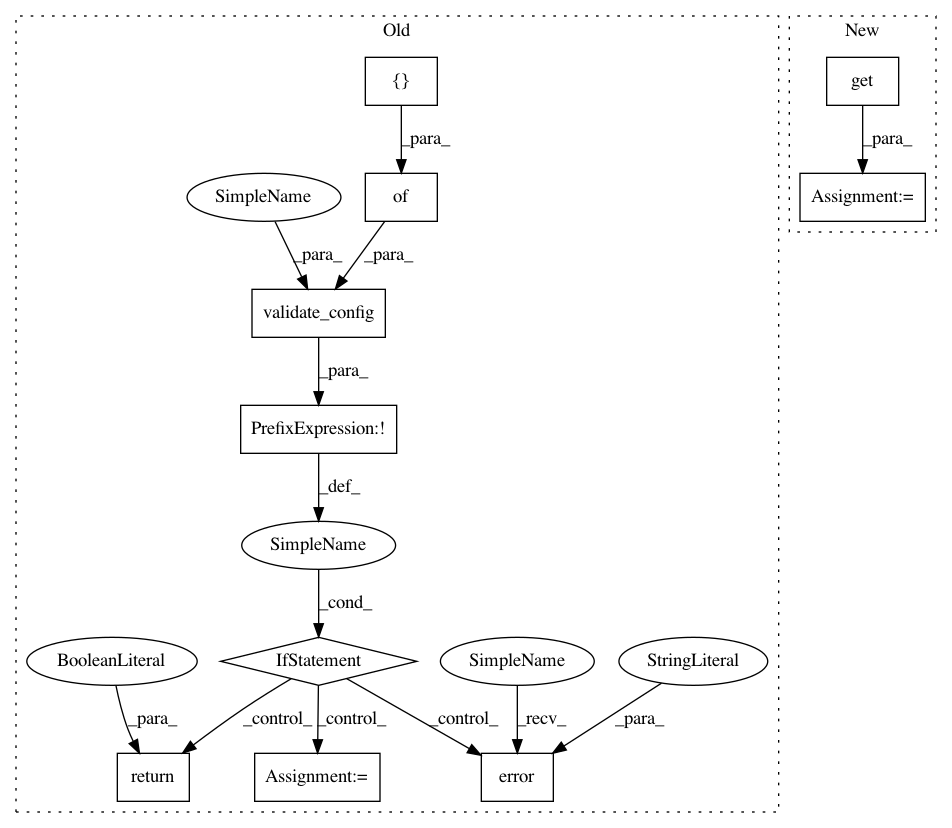

6acaf25b0d81468759c0ebb6a858de860ef21b2b,homeassistant/components/mysensors.py,,setup,#Any#Any#,46
Before Change
def setup(hass, config): // pylint: disable=too-many-locals
Setup the MySensors component.
if not validate_config(config,
{DOMAIN: [CONF_GATEWAYS]},
_LOGGER):
return False
if not all(CONF_DEVICE in gateway
for gateway in config[DOMAIN][CONF_GATEWAYS]):
_LOGGER.error("Missing required configuration items "
"in %s: %s", DOMAIN, CONF_DEVICE)
return False
import mysensors.mysensors as mysensors
version = str(config[DOMAIN].get(CONF_VERSION, DEFAULT_VERSION))
is_metric = hass.config.units.is_metric
persistence = config[DOMAIN].get(CONF_PERSISTENCE, True)
def setup_gateway(device, persistence_file, baud_rate, tcp_port, in_prefix,
out_prefix):
After Change
Setup the MySensors component.
import mysensors.mysensors as mysensors
version = config[DOMAIN].get(CONF_VERSION)
persistence = config[DOMAIN].get(CONF_PERSISTENCE)
def setup_gateway(device, persistence_file, baud_rate, tcp_port, in_prefix,
out_prefix):
In pattern: SUPERPATTERN
Frequency: 3
Non-data size: 10
Instances
Project Name: home-assistant/home-assistant
Commit Name: 6acaf25b0d81468759c0ebb6a858de860ef21b2b
Time: 2016-08-27
Author: marhje52@kth.se
File Name: homeassistant/components/mysensors.py
Class Name:
Method Name: setup
Project Name: home-assistant/home-assistant
Commit Name: 22362727e42cf5c3faba015b837315fe8babd0e6
Time: 2016-09-04
Author: kellerza@gmail.com
File Name: homeassistant/components/device_tracker/unifi.py
Class Name:
Method Name: get_scanner
Project Name: home-assistant/home-assistant
Commit Name: 6acaf25b0d81468759c0ebb6a858de860ef21b2b
Time: 2016-08-27
Author: marhje52@kth.se
File Name: homeassistant/components/mysensors.py
Class Name:
Method Name: setup
Project Name: home-assistant/home-assistant
Commit Name: 6f27d58188ce908ea6f04e0f9cd7887c1201b614
Time: 2016-08-23
Author: mail@fabian-affolter.ch
File Name: homeassistant/components/splunk.py
Class Name:
Method Name: setup